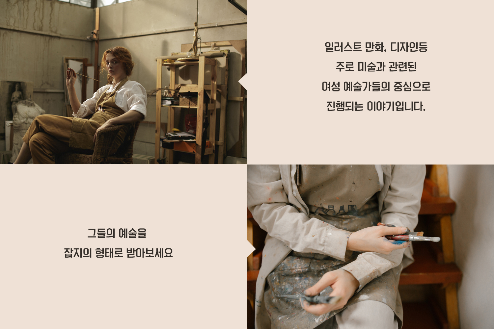

하루에 3번 이상 해를 본다면 행복한 삶이라는 말이 있습니다.
하지만 우리는 그런 사소한 행동 하나를
실행에 옮기지 못하는 바쁜 삶을 살고 있지요.
당신의 삶에 한줄기 햇살처럼 비추는 청년 예술가들이 있습니다.
≪해야 일간지≫와 함께 행복을 찾으로 가보는 건 어떨까요?

잡지는 무엇이 있을까?
| 모든 코너를 섞은 잡지(대표) |
청년 예술가 인터뷰 |
국내 청년 예술가
공연/전시 소식 |
작가 별 작품소개
(좋아하는 작가 선택) |
작가 관련 상품 소개 |
| 월~ 금 매일 밤 12시 |
월,금 밤 12시 |
일 밤 12시 |
화,목 밤 12시 |
비정기적 전달 |
- Only Your Benfit-
01
구독 신청
하러가기 |
02
선착숙 100명
상품별 쿠폰 최대
50% 할인! |
03
잡지 상품평 작성시
1500 point 지급 |
04
전체구독시
랜덤 일러스트 엽서 증정 |
05
SNS 후기인증시
400pint 지급! |
|